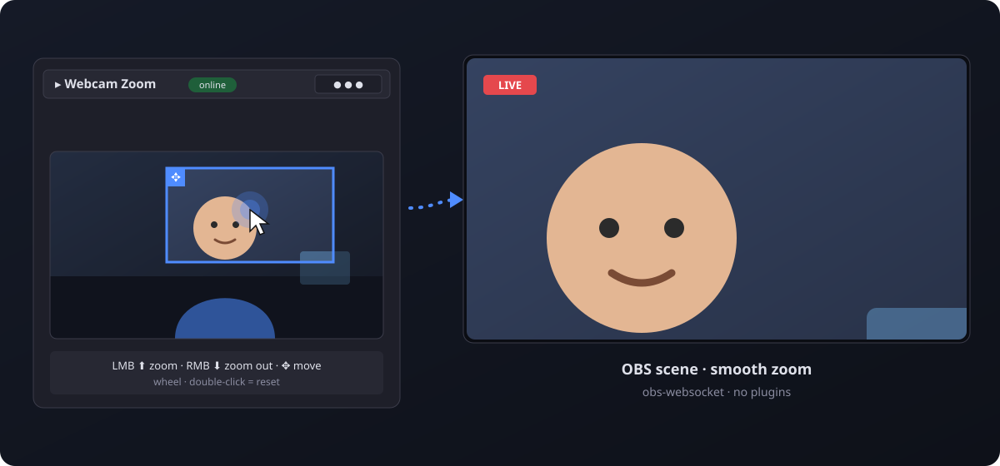

- Бесплатно
- Без плагинов
- OBS 28+
- Windows · macOS · Linux
Плавный зум веб-камеры в OBS: зажал мышку и приблизил эту точку
Webcam Zoom — маленькая панель внутри OBS Studio. В ней видна картинка с камеры. Зажимаешь левую кнопку мыши на лице, руке или предмете, и веб-камера в стриме или записи плавно приближается именно туда. Отпустил, и зум остаётся. Правая кнопка отдаляет.

Что это и кому нужно?
Если вы стримите, записываете уроки, обзоры товаров, готовку или рукоделие, иногда нужно, чтобы зритель посмотрел поближе: на предмет в руках, на лицо, на деталь на столе. Обычно для этого ставят вторую камеру или крутят обрезку в настройках прямо во время эфира. Webcam Zoom превращает это в одно движение мышкой.
Зум в точку
Зажмите левую кнопку там, куда нужно посмотреть. Чем дольше держите, тем ближе.
Плавно, как у оператора
Все движения анимированы. Скорость, максимальный зум и плавность настраиваются ползунками.
Все сцены сразу
Камера на весь экран или маленькая в углу: зум применяется ко всем одновременно.
Без плагинов
Просто веб-страница в доке OBS. Работает через obs-websocket, который уже встроен в OBS.
Как установить (по шагам)
Нужна только OBS Studio 28 или новее (версия видна в Справка → О программе).
-
Скачать и распаковать
Нажмите Скачать ZIP. Распакуйте в папку, которую не удалите, например
C:\obs-tools\webcam-zoom-obs. Внутри должен лежать файлindex.html. -
Включить WebSocket-сервер в OBS
В OBS: Сервис → Настройки сервера WebSocket. Поставьте галочку Включить сервер WebSocket. Нажмите Показать сведения о подключении и скопируйте пароль. Порт обычно
4455. Нажмите ОК.В разных версиях OBS меню называется «Сервис» или «Инструменты» (Tools) — это одно и то же.
-
Добавить док
В OBS: Доки → Пользовательские браузерные доки…. В пустой строке введите имя
Webcam Zoomи адрес файла, с прямыми слэшами:file:///C:/obs-tools/webcam-zoom-obs/index.htmlНажмите «Применить». Появится новая панель, её можно перетащить куда удобно.
На macOS / Linux адрес выглядит так:
file:///Users/имя/obs-tools/webcam-zoom-obs/index.html. -
Подключиться
В панели уже стоит адрес
ws://127.0.0.1:4455. Вставьте пароль и нажмите «Подключить». Статус станет зелёным: online. -
Выбрать камеру
Выберите любую сцену и элемент с веб-камерой (обычно он выбирается сам). В панели появится картинка с камеры. Готово. В следующий раз панель подключится сама.
Как пользоваться
| Действие | Что происходит |
|---|---|
| Держать левую кнопку мыши на картинке | Плавно приближает к курсору. Если вести мышь с зажатой кнопкой, зум следует за ней. |
| Отпустить кнопку | Зум остаётся на месте. |
| Держать правую кнопку мыши | Плавно отдаляет, тоже следуя за курсором. |
| Тянуть ручку ✥ в углу синей рамки | Двигает видимую область, не меняя зум. |
| Колесо мыши | Приблизить или отдалить по шагам. |
| Двойной клик | Плавный возврат к общему плану. |
Панель всегда показывает весь кадр с камеры, а синяя рамка — то, что прямо сейчас видят зрители.
Настройки
Нажмите на заголовок панели, чтобы открыть настройки: Скорость (как быстро растёт зум, пока держите кнопку), Макс. зум (до ×10), Плавность (насколько мягко картинка догоняет) и кнопка «Вернуть исходный вид».
Несколько сцен
Одна и та же веб-камера может быть на весь экран в одной сцене и маленькой в углу в другой. Панель находит все такие элементы (в том числе в группах и вложенных сценах) и приближает их вместе. Маленькая камера остаётся маленькой, просто картинка в ней становится ближе. Новые сцены с камерой подхватываются автоматически.
Когда панель берёт камеру под управление, она заменяет собственную обрезку и рамку (bounding box) этого элемента. Кнопка «Вернуть исходный вид» возвращает их всем элементам.
Как это работает (для любопытных)
Превью OBS не передаёт клики мыши в источники, а Browser Source принимает мышь только через отдельное окно «Взаимодействовать». Пользовательский браузерный док — обычная интерактивная веб-страница внутри OBS, поэтому Webcam Zoom живёт там.
Док общается с OBS через obs-websocket (встроен начиная с OBS 28). Саму камеру он не открывает, её держит OBS. Превью в доке — поток скриншотов источника камеры. Зум делается изменением обрезки (crop) элемента сцены с камерой, а bounding box сохраняет его размер на холсте. Вся анимация считается в доке.
Всё остаётся на вашем компьютере. Док подключается только к 127.0.0.1, то есть к вашему OBS.
Вопросы и решение проблем
Панель пишет «Не удалось подключиться»
Проверьте, что WebSocket-сервер включён в настройках сервера WebSocket, порт 4455, а пароль точно тот, что показан в «Показать сведения о подключении».
Панель пустая / белая
Неверный путь к файлу в адресе дока. Он должен начинаться с file:///, идти с прямыми слэшами и указывать на index.html внутри распакованной папки.
Превью чёрное или зум ничего не делает
Проверьте, что в настройках выбран правильный элемент и камера действительно работает в OBS. Нажмите ⟳, чтобы обновить списки.
В одной сцене зум работает, а в другой нет
Нажмите ⟳ в настройках. Панель заново просканирует все сцены и найдёт каждую копию веб-камеры.
Как удалить?
Нажмите «Вернуть исходный вид», затем удалите док в Доки → Пользовательские браузерные доки и удалите папку.
Это плагин? Это безопасно?
Это не плагин, а локальная HTML-страница. Она ничего не отправляет в интернет и не открывает веб-камеру напрямую.